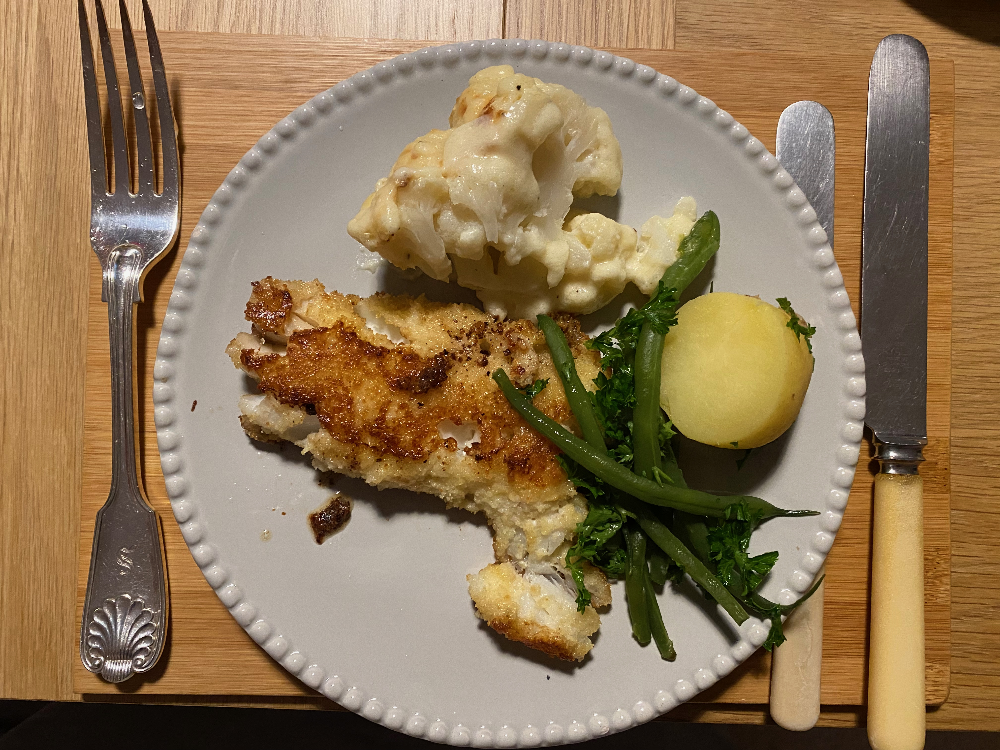

Charlie's simple recipes
Return to recipe list
Pan-fried haddock and tomato sauce

I usually make a fresh tomato sauce to go with the haddock.
Steps
- Make the tomato sauce first: fry some chopped shallots or onion; once they’re soft and starting to brown, add chopped fresh tomatoes. Cook for a short time until the tomatoes are hot and melded in with the onions.
- If the haddock isn’t already breaded, whisk an egg. Put breadcrumbs all over the fish, dunk it in the egg, then put more breadcrumbs over it to form a good coating.
- Warm a frying pan to medium heat, add a light oil (e.g., canola) and fry the haddock on one side until it’s well browned, then turn and fry it on the other side.
- Serve the haddock immediately with the tomato sauce alongside it. Squeeze some fresh lemon on the fish. Serve with a green veg or salad.